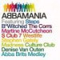

COMPILACIONES Y CONCIERTOS
COMPILATIONS & CONCERTS
COMPILATIONS & CONCERTS
| Portada Cover |
Albumo Album |
Artista de Albumo Album Artist |
Año Year |
Idioma Language |
# of Tracks # de Pistas |
Media | BitRate | Notas Notes |
|---|---|---|---|---|---|---|---|---|
 |
12" of Pleasure | Various Artists | 1994 | EN | 10 | mp3 | 128 | |
 |
20 Irish Rebel Ballads - Volume 1 | Various Artists | 2000 | EN | 20 | mp3 | 128 | |
 |
20 Irish Rebel Ballads - Volume 2 | Various Artists | 2000 | EN | 20 | mp3 | 128 | |
 |
40 Rebel Songs | Various Artists | 2000 | EN | 40 | mp3 | 128 | |
 |
50 Complete Irish Rebel Ballads | Various Artists | 1999 | EN | 51 | mp3 | 128 | |
 |
60 Greatest Ever Irish Rebel Songs | Various Artists | 2011 | EN | 60 | mp3 | 211 | |
 |
100 Best Hymns | Various Artists | 2011 | EN | 100 | mp3 | 320 | |
 |
A Treasury of Irish Song | Various Artists | 1996 | GA, EN | 15 | mp3 | 128 | |
|  | Abbamania | Various Artists | 1999 | EN | 12 | mp3 | 128 | |
 |
Dance Hits of the Eighties | Various Artists | 1991 | EN | 15 | mp3 | 128 | |
 |
Disco Explosion | Various Artists | 1990 | EN | 20 | mp3 | 128 | |
 |
Feeding The Flame: Songs By Men To End AIDS | Various Artists | 1990 | EN | 16 | m4a | 128 | |
 |
Glad To Be Gay | Various Artists | 2021 | # | 67 | mp3 | 320 | |
 |
Grandmaster High Energy | Various Artists | 2010 | EN | 1 | mp3 | 128 | |
 |
Heritage of Ireland | Various Artists | 1999 | EN | 16 | mp3 | 128 | |
 |
Hi Energy | Various Artists | 1994 | EN | 16 | mp3 | 128 | |
 |
Hits 93, Volume 3 | Various Artists | 1993 | EN | 22 | mp3 | 128 | |
 |
Irish Patriotic Songs | Various Artists | 2002 | EN | 16 | mp3 | 128 | |
 |
La Vie En Rose Presents...volume 1 | Various Artists | 1991 | EN | 2 | mp3 | 128 | |
 |
Laughter & Song From Ireland | Various Artists | 1999 | EN | 16 | mp3 | 128 | |
 |
Lili Marleen | Various Artists | 2020 | # | 16 | m4a | 256 | |
 |
National Anthems Of South America | The Alan B. Campbell Orchestra | 2011 | ♫ | 15 | mp3 | 320 | |
 |
National Anthems of the World | Razumovsky Symphony Orchestra | 2019 | ♫ | 462 | mp3 | 320 | |
 |
Nothing But A Merciless Night | Various Artists | 2002 | EN, HU, DE | 26 | mp3 | 192 | |
 |
Nothing But A Merciless Night II | Various Artists | 2007 | EN, HU, DE | 28 | mp3 | 192 | |
 |
Paalam, Maraming Salamat (A Memorial Tribute) | Various Artists | 2018 | TL, EN | 15 | mp3 | 320 | |
 |
Patriotic Names | Various Artists | 1998 | EN | 43 | mp3 | 128 | |
 |
Pinoy Mega-Hits | Various Artists | 2003 | TL, EN | 14 | mp3 | 128 | |
 |
Songs from the Emerald Isle | Various Artists | 1996 | EN | 18 | mp3 | 128 | |
 |
Songs Of Ireland | Various Artists | 1995 | EN | 20 | mp3 | 128 | |
 |
Songs Of Ireland's 1916 Rising | Various Artists | 2001 | EN | 30 | mp3 | 128 | |
 |
Stock Aitken Waterman Gold | Various Artists | 2005 | EN | 48 | mp3 | 320 | |
 |
That's Eurobeat | Various Artists | 1994 | EN | 19 | mp3 | 128 | |
 |
The Best of High Energy | Various Artists | 1991 | EN | 20 | mp3 | 128 | |
 |
The Complete Irish National Anthem | Various Artists | 2006 | EN, GA | 20 | mp3 | 128 | |
 |
The Irish Collection | Various Artists | 1995 | EN | 20 | mp3 | 128 | |
 |
The Singer & The Song | Various Artists | 1993 | EN | 40 | mp3 | 128 | |
 |
The Very Best Of Ireland | Various Artists | 1995 | EN | 40 | mp3 | 128 | |
 |
Wild Rover: A Feast of Irish Folk | Various Artists | 1994 | EN | 20 | mp3 | 128 |